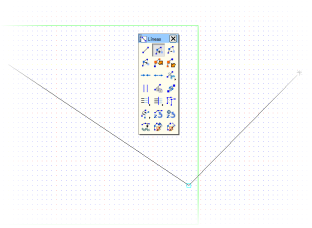

| |
|
VEKTÖREL TANIMLAMA
|
ISTRAM®/ISPOL® programında, enkesite ait hendek, yaya kaldırımı, şev veya bölünmüş yollardaki refüj gibi geometrik elemanların vektörel olarak tanımlanması oldukça yaygın bir yöntemdir.  Söz konusu elemanın geometrik tanımlama modu vektörel olarak ayarlandığında veya sadece bu şekilde tanımlanabildiğinde, [VEKTÖR n nkt] butonuna basılarak vektör verileri tanımlanabilir. Buradaki n, elemanın vektörel tanımında kullanılan nokta sayısını ifade eder. Söz konusu elemanın geometrik tanımlama modu vektörel olarak ayarlandığında veya sadece bu şekilde tanımlanabildiğinde, [VEKTÖR n nkt] butonuna basılarak vektör verileri tanımlanabilir. Buradaki n, elemanın vektörel tanımında kullanılan nokta sayısını ifade eder.Her durumda, bu geometri tanımlanırken aşağıdaki gibi bir menü görüntülenir:  [Ekle], [Araya Ekle], [Sil], [Tekrarla] ve [Başlat] seçenekleri, vektörün şeklini oluşturan segmentleri tanımlayan delta X, delta Y (veya bazı durumlarda gösterildiği gibi dX, dY) değerler listesini düzenlemeye olanak tanır. Yan menüdeki [GRAFİK] seçeneği ile, daha önce bahsedilen değerler listesi bir polyline (çoklu doğru) haline getirilir ve aynı anda vektörel geometrinin serbestçe çizilebileceği, ölçekli bir grid (ızgara) içeren grafik düzenleme ortamına girilir. En az bir veri noktası olmadan grafik moda girilemez. Bu ortamda vektör, ekranda beliren çizgiden başlayarak grafik olarak çizilir. Her zaman ekranda görünen vektör parçasını kullanmak ve onu pozitif X değerlerine doğru uzatmak tavsiye edilir. Mevcut olan çeşitli yakalama modları da bu işi kolaylaştırır. Eğer enkesitin sol tarafına uygulanacak bir vektör tanımlanıyorsa, bu vektör yine sağa doğru, X'in artan değerleri kullanılarak, yani eksenden uzaklaşan noktalarla tanımlanır. Bu, vektörlerin her iki taraf için de yeniden kullanılabilir olmasını sağlar. Düzenleme sonunda sadece tek bir polyline kalması ve bu polyline'ın köşe (vertex) numaralarının apsis (x) ekseni boyunca artması gereklidir. Bu grafik düzenleme ortamından dikey menüdeki [BİTİR] butonu ile çıkıldığında, çizilen polyline'ın segmentleri, olası bir değişiklik için sayısal olarak ayrıştırılmış şekilde listelenir. Üçüncü veri sütunu, vektörün belirli geometrik davranışlarına atıfta bulunur ve her durum için değişiklik gösterir. Bu davranış, vektörel olarak tanımlanabilen her enkesit elemanı için kendi bölümünde açıklanmaktadır. .vec uzantılı dosyaları, sırasıyla [Kaydet] ve [Yükle] seçenekleri ile kaydetmek ve geri yüklemek mümkündür. |